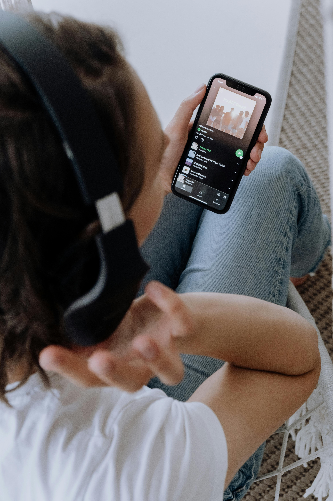
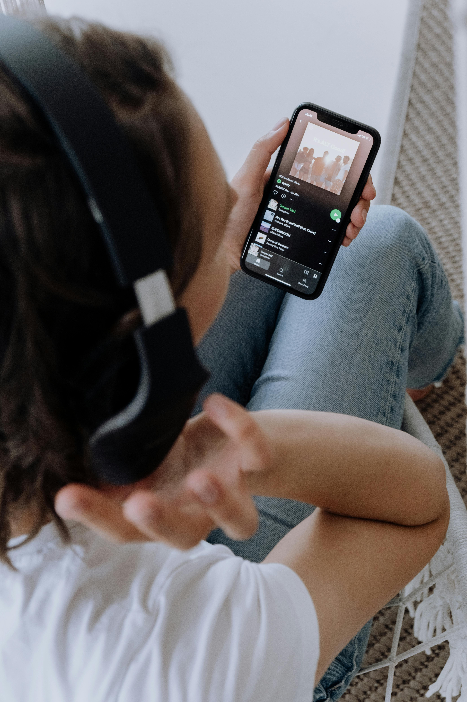
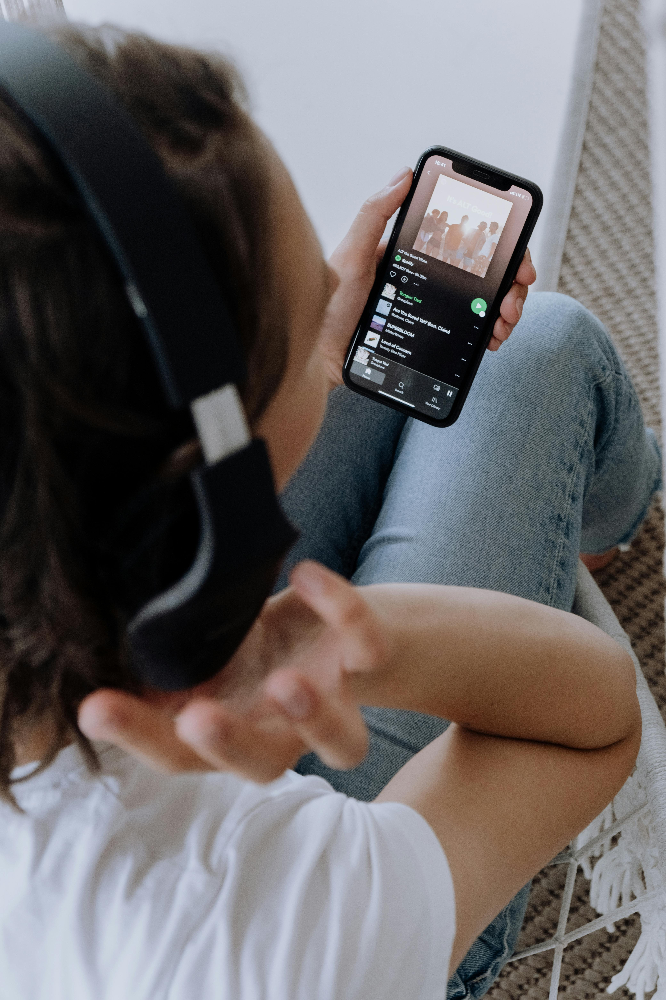
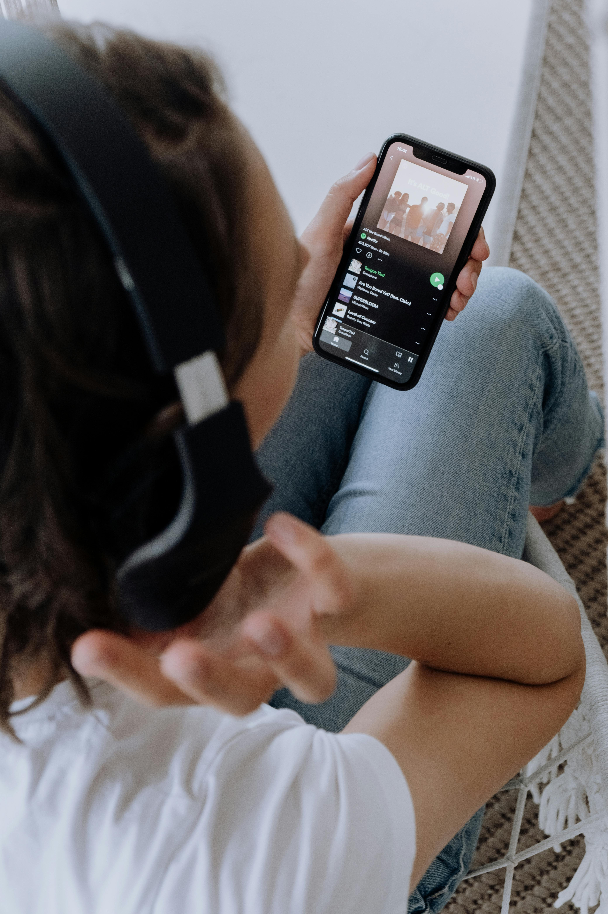

- Age : 24 ans
- Ville: Firminy
- Langue français , anglais A2
- Hobbys: Musique , lecture
- 2 qualités: Calme, à l'écoute
- frère/soeur: 1 frère et 1 soeur + vieille
- Animaux : 4 chats
 

 

Cinthya vient d'une école de graphisme et imprimerie. Suite à cela elle a fait un service civique sur la sensibilisation à la santé mentale. A ce jours, elle est rentrée en formation à La TOILE ( EM Buisness school Lyon)

Elle souhaite découvrir les metiers du numériques afin de s'orienter au mieux.
Après la toile elle souhaite poursuivre sur une alternance ou une formation UX/UI ou developpement Web